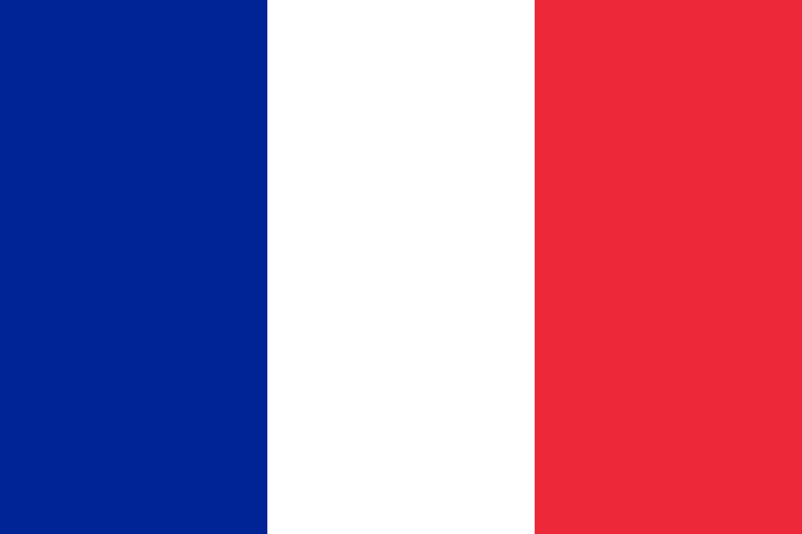

Flash-card quizzes to build your French vocabulary — bonne chance!
French is spoken by roughly 320 million people across five continents and is an official language in 29 countries and territories, from France and Belgium to Senegal, Québec and Haiti. It's also a working language of the United Nations, the European Union and the International Olympic Committee — a genuinely useful language to know well beyond the classroom.
Every language deck on Flashlingo comes in three levels, so you can start where you actually are instead of where a textbook assumes you are.
Bonjour (hello), Merci (thank you), S'il vous plaît (please), Oui / Non (yes / no), and Au revoir (goodbye) will get you through more real conversations than you'd expect.
Every word in the Flashlingo French quiz, grouped by level and topic — 1,500 words in total. Use it to preview a category before you play, or to review the words you missed afterwards. Reading a list is no substitute for active recall, so once a topic looks familiar, test yourself with the quiz above.
The 500 highest-frequency words — numbers, colours, family, food, greetings and the everyday essentials.
| French | English |
|---|---|
| zéro | zero |
| un | one |
| deux | two |
| trois | three |
| quatre | four |
| cinq | five |
| six | six |
| sept | seven |
| huit | eight |
| neuf | nine |
| dix | ten |
| onze | eleven |
| douze | twelve |
| treize | thirteen |
| quatorze | fourteen |
| quinze | fifteen |
| seize | sixteen |
| dix-sept | seventeen |
| dix-huit | eighteen |
| dix-neuf | nineteen |
| vingt | twenty |
| trente | thirty |
| quarante | forty |
| cinquante | fifty |
| soixante | sixty |
| soixante-dix | seventy |
| quatre-vingts | eighty |
| quatre-vingt-dix | ninety |
| cent | hundred |
| mille | thousand |
| French | English |
|---|---|
| rouge | red |
| bleu | blue |
| vert | green |
| jaune | yellow |
| orange | orange |
| violet | purple |
| rose | pink |
| noir | black |
| blanc | white |
| gris | grey |
| brun | brown |
| beige | beige |
| French | English |
|---|---|
| lundi | Monday |
| mardi | Tuesday |
| mercredi | Wednesday |
| jeudi | Thursday |
| vendredi | Friday |
| samedi | Saturday |
| dimanche | Sunday |
| French | English |
|---|---|
| janvier | January |
| février | February |
| mars | March |
| avril | April |
| mai | May |
| juin | June |
| juillet | July |
| août | August |
| septembre | September |
| octobre | October |
| novembre | November |
| décembre | December |
| French | English |
|---|---|
| le printemps | spring |
| l'été | summer |
| l'automne | autumn |
| l'hiver | winter |
| French | English |
|---|---|
| la famille | family |
| le père | father |
| la mère | mother |
| le fils | son |
| la fille | daughter |
| le frère | brother |
| la sœur | sister |
| le grand-père | grandfather |
| la grand-mère | grandmother |
| l'oncle | uncle |
| la tante | aunt |
| le cousin | cousin (male) |
| la cousine | cousin (female) |
| le mari | husband |
| la femme | wife |
| l'enfant | child |
| le bébé | baby |
| les parents | parents |
| French | English |
|---|---|
| la tête | head |
| le visage | face |
| les cheveux | hair |
| l'œil | eye |
| les yeux | eyes |
| le nez | nose |
| la bouche | mouth |
| l'oreille | ear |
| le cou | neck |
| l'épaule | shoulder |
| le bras | arm |
| la main | hand |
| le doigt | finger |
| le ventre | stomach |
| le dos | back |
| la jambe | leg |
| le genou | knee |
| le pied | foot |
| le cœur | heart |
| la dent | tooth |
| la langue | tongue |
| French | English |
|---|---|
| le chat | cat |
| le chien | dog |
| le cheval | horse |
| la vache | cow |
| le cochon | pig |
| le mouton | sheep |
| la chèvre | goat |
| le poulet | chicken |
| le lapin | rabbit |
| la souris | mouse |
| l'oiseau | bird |
| le poisson | fish |
| la grenouille | frog |
| le serpent | snake |
| l'éléphant | elephant |
| le lion | lion |
| le tigre | tiger |
| l'ours | bear |
| le singe | monkey |
| le canard | duck |
| la poule | hen |
| French | English |
|---|---|
| le pain | bread |
| le fromage | cheese |
| le beurre | butter |
| le lait | milk |
| l'œuf | egg |
| la viande | meat |
| le porc | pork |
| le bœuf | beef |
| la pomme | apple |
| la poire | pear |
| la banane | banana |
| l'orange | orange |
| la fraise | strawberry |
| le raisin | grape |
| la tomate | tomato |
| la carotte | carrot |
| la pomme de terre | potato |
| l'oignon | onion |
| la salade | salad |
| le riz | rice |
| les pâtes | pasta |
| la soupe | soup |
| le gâteau | cake |
| le chocolat | chocolate |
| le sucre | sugar |
| le sel | salt |
| le poivre | pepper |
| l'huile | oil |
| le repas | meal |
| le petit-déjeuner | breakfast |
| le déjeuner | lunch |
| le dîner | dinner |
| French | English |
|---|---|
| l'eau | water |
| le jus | juice |
| le café | coffee |
| le thé | tea |
| le vin | wine |
| la bière | beer |
| le jus d'orange | orange juice |
| French | English |
|---|---|
| les vêtements | clothes |
| la chemise | shirt |
| le pantalon | trousers |
| la robe | dress |
| la jupe | skirt |
| le manteau | coat |
| la veste | jacket |
| le pull | sweater |
| les chaussures | shoes |
| les chaussettes | socks |
| le chapeau | hat |
| la cravate | tie |
| le jean | jeans |
| le t-shirt | t-shirt |
| le short | shorts |
| les gants | gloves |
| l'écharpe | scarf |
| French | English |
|---|---|
| la maison | house |
| l'appartement | apartment |
| la pièce | room |
| la chambre | bedroom |
| la cuisine | kitchen |
| la salle de bain | bathroom |
| les toilettes | toilet |
| le salon | living room |
| la salle à manger | dining room |
| le jardin | garden |
| la porte | door |
| la fenêtre | window |
| l'escalier | stairs |
| le lit | bed |
| la chaise | chair |
| la table | table |
| le canapé | sofa |
| l'armoire | wardrobe |
| le bureau | desk |
| la lampe | lamp |
| le miroir | mirror |
| le tapis | rug |
| le frigo | fridge |
| le four | oven |
| French | English |
|---|---|
| être | to be |
| avoir | to have |
| aller | to go |
| faire | to do / to make |
| dire | to say |
| voir | to see |
| savoir | to know (fact) |
| pouvoir | to be able to |
| vouloir | to want |
| venir | to come |
| prendre | to take |
| donner | to give |
| trouver | to find |
| parler | to speak |
| manger | to eat |
| boire | to drink |
| dormir | to sleep |
| travailler | to work |
| habiter | to live (reside) |
| aimer | to like / to love |
| lire | to read |
| écrire | to write |
| écouter | to listen |
| regarder | to watch |
| acheter | to buy |
| vendre | to sell |
| ouvrir | to open |
| fermer | to close |
| commencer | to begin |
| finir | to finish |
| marcher | to walk |
| courir | to run |
| jouer | to play |
| chanter | to sing |
| danser | to dance |
| appeler | to call |
| répondre | to answer |
| chercher | to look for |
| aider | to help |
| penser | to think |
| croire | to believe |
| connaître | to know (person) |
| utiliser | to use |
| attendre | to wait |
| partir | to leave |
| arriver | to arrive |
| entrer | to enter |
| sortir | to go out |
| mettre | to put |
| porter | to carry / wear |
| vivre | to live (be alive) |
| nager | to swim |
| cuisiner | to cook |
| conduire | to drive |
| voyager | to travel |
| apprendre | to learn |
| comprendre | to understand |
| demander | to ask |
| montrer | to show |
| rire | to laugh |
| pleurer | to cry |
| tomber | to fall |
| rester | to stay |
| payer | to pay |
| nettoyer | to clean |
| choisir | to choose |
| gagner | to win / to earn |
| perdre | to lose |
| oublier | to forget |
| se souvenir | to remember |
| partager | to share |
| préparer | to prepare |
| accepter | to accept |
| refuser | to refuse |
| expliquer | to explain |
| continuer | to continue |
| retourner | to return |
| visiter | to visit |
| changer | to change |
| offrir | to offer |
| permettre | to allow |
| réserver | to book / to reserve |
| répéter | to repeat |
| inviter | to invite |
| améliorer | to improve |
| rejoindre | to join |
| décider | to decide |
| essayer | to try |
| réussir | to succeed |
| French | English |
|---|---|
| grand | big / tall |
| petit | small / little |
| bon | good |
| mauvais | bad |
| beau | beautiful |
| joli | pretty |
| vieux | old |
| jeune | young |
| nouveau | new |
| long | long |
| court | short |
| chaud | hot / warm |
| froid | cold |
| facile | easy |
| difficile | difficult |
| rapide | fast |
| lent | slow |
| fort | strong |
| faible | weak |
| riche | rich |
| pauvre | poor |
| content | happy / pleased |
| triste | sad |
| fatigué | tired |
| malade | ill / sick |
| propre | clean |
| sale | dirty |
| ouvert | open |
| fermé | closed |
| plein | full |
| vide | empty |
| seul | alone |
| libre | free |
| occupé | busy |
| heureux | happy |
| sympa | nice / friendly |
| intéressant | interesting |
| intelligent | intelligent |
| moderne | modern |
| naturel | natural |
| important | important |
| différent | different |
| parfait | perfect |
| délicieux | delicious |
| dangereux | dangerous |
| calme | calm |
| bruyant | noisy |
| spécial | special |
| dernier | last |
| premier | first |
| prochain | next |
| même | same |
| French | English |
|---|---|
| bonjour | hello / good morning |
| bonsoir | good evening |
| bonne nuit | good night |
| au revoir | goodbye |
| salut | hi |
| merci | thank you |
| s'il vous plaît | please (formal) |
| s'il te plaît | please (informal) |
| de rien | you're welcome |
| pardon | excuse me / sorry |
| excusez-moi | excuse me (formal) |
| oui | yes |
| non | no |
| French | English |
|---|---|
| aujourd'hui | today |
| demain | tomorrow |
| hier | yesterday |
| maintenant | now |
| toujours | always |
| jamais | never |
| souvent | often |
| parfois | sometimes |
| tôt | early |
| tard | late |
| l'heure | hour / time |
| la minute | minute |
| le jour | day |
| la semaine | week |
| le mois | month |
| l'année | year |
| le matin | morning |
| le midi | noon |
| l'après-midi | afternoon |
| le soir | evening |
| la nuit | night |
| French | English |
|---|---|
| le soleil | sun |
| la pluie | rain |
| la neige | snow |
| le vent | wind |
| le nuage | cloud |
| l'orage | storm |
| le brouillard | fog |
| la chaleur | heat |
| il fait beau | the weather is nice |
| il pleut | it is raining |
| il neige | it is snowing |
| French | English |
|---|---|
| la voiture | car |
| le train | train |
| le bus | bus |
| le métro | metro / subway |
| l'avion | plane |
| le bateau | boat |
| le taxi | taxi |
| le vélo | bicycle |
| la moto | motorcycle |
| la gare | train station |
| l'aéroport | airport |
| l'arrêt de bus | bus stop |
| French | English |
|---|---|
| l'école | school |
| l'université | university |
| le bureau | office |
| le magasin | shop / store |
| le marché | market |
| le supermarché | supermarket |
| le restaurant | restaurant |
| le café | café |
| l'hôpital | hospital |
| la pharmacie | pharmacy |
| la banque | bank |
| l'église | church |
| la rue | street |
| la ville | city |
| le village | village |
| le pays | country |
| la France | France |
| le parc | park |
| la plage | beach |
| la montagne | mountain |
| la forêt | forest |
| la mer | sea |
| la rivière | river |
| le château | castle |
| le musée | museum |
| le théâtre | theatre |
| la piscine | swimming pool |
| le stade | stadium |
| le centre commercial | shopping centre |
| l'hôtel | hotel |
| la cathédrale | cathedral |
| French | English |
|---|---|
| le livre | book |
| le stylo | pen |
| le crayon | pencil |
| le cahier | notebook |
| le téléphone | phone |
| l'ordinateur | computer |
| la clé | key |
| le sac | bag |
| la montre | watch |
| l'argent | money |
| la carte | card / map |
| le journal | newspaper |
| la photo | photo |
| la lettre | letter |
| le cadeau | gift |
| le jouet | toy |
| French | English |
|---|---|
| le médecin | doctor |
| l'infirmier | nurse |
| le professeur | teacher |
| l'étudiant | student |
| le cuisinier | cook |
| le policier | police officer |
| le pompier | firefighter |
| l'avocat | lawyer |
| l'ingénieur | engineer |
| le serveur | waiter |
| l'acteur | actor |
| le dentiste | dentist |
| le directeur | manager |
| le journaliste | journalist |
| le chauffeur | driver |
| French | English |
|---|---|
| la classe | classroom |
| le cours | lesson |
| le devoir | homework |
| l'examen | exam |
| la note | grade |
| le tableau | blackboard |
| la bibliothèque | library |
| le dictionnaire | dictionary |
| la calculatrice | calculator |
| la règle | ruler |
| la question | question |
| la réponse | answer |
| la matière | subject |
| l'erreur | mistake |
| la récréation | break / recess |
| French | English |
|---|---|
| qui | who |
| quoi | what |
| où | where |
| quand | when |
| comment | how |
| pourquoi | why |
| combien | how much / how many |
| quel | which |
| French | English |
|---|---|
| et | and |
| ou | or |
| mais | but |
| parce que | because |
| donc | so / therefore |
| si | if |
| aussi | also / too |
| très | very |
| assez | quite / enough |
| peut-être | maybe |
| bien sûr | of course |
| d'accord | ok / agreed |
500 words for real conversations about work, travel, health, media, money and current affairs.
| French | English |
|---|---|
| l'emploi | employment |
| le chômage | unemployment |
| l'entreprise | company |
| le salaire | salary |
| le contrat | contract |
| la carrière | career |
| la formation | training |
| le recrutement | recruitment |
| le poste | position |
| le budget | budget |
| le rapport | report |
| le délai | deadline |
| l'objectif | objective |
| la productivité | productivity |
| le prestataire | contractor |
| le télétravail | remote work |
| le stagiaire | intern |
| la prime | bonus |
| le syndicat | union |
| la grève | strike |
| le patron | employer |
| licencier | to fire |
| démissionner | to resign |
| le CV | résumé |
| l'entretien d'embauche | job interview |
| postuler | to apply |
| la réunion | meeting |
| l'équipe | team |
| le projet | project |
| le collègue | colleague |
| la promotion | promotion |
| le lieu de travail | workplace |
| les heures supplémentaires | overtime |
| French | English |
|---|---|
| le président | president |
| le parlement | parliament |
| l'élection | election |
| la loi | law |
| le vote | vote |
| le parti | party |
| la démocratie | democracy |
| le citoyen | citizen |
| la constitution | constitution |
| le ministre | minister |
| le sénat | senate |
| l'ambassadeur | ambassador |
| l'accord | agreement |
| le traité | treaty |
| la réforme | reform |
| le débat | debate |
| le discours | speech |
| la campagne | campaign |
| le candidat | candidate |
| l'opposition | opposition |
| la coalition | coalition |
| la liberté | freedom |
| le droit | right |
| la frontière | border |
| le gouvernement | government |
| l'électeur | voter |
| la politique | policy |
| French | English |
|---|---|
| le médicament | medication |
| l'opération | operation |
| la maladie | illness |
| le symptôme | symptom |
| le diagnostic | diagnosis |
| le traitement | treatment |
| la guérison | recovery |
| la chirurgie | surgery |
| les urgences | emergency room |
| l'ordonnance | prescription |
| le vaccin | vaccine |
| l'allergie | allergy |
| la douleur | pain |
| la fièvre | fever |
| la tension | blood pressure |
| le diabète | diabetes |
| le cancer | cancer |
| la thérapie | therapy |
| la blessure | injury |
| la fracture | fracture |
| le cabinet | doctor's office |
| la consultation | consultation |
| la mutuelle | health insurance |
| le pharmacien | pharmacist |
| le remède | remedy |
| la clinique | clinic |
| le chirurgien | surgeon |
| l'infirmier | nurse |
| le spécialiste | specialist |
| la radiographie | X-ray |
| le système immunitaire | immune system |
| le bilan de santé | checkup |
| l'épidémie | epidemic |
| French | English |
|---|---|
| l'environnement | environment |
| la pollution | pollution |
| le réchauffement | warming |
| l'écologie | ecology |
| le recyclage | recycling |
| les déchets | waste |
| la biodiversité | biodiversity |
| le développement durable | sustainable development |
| l'empreinte carbone | carbon footprint |
| l'éolienne | wind turbine |
| l'énergie solaire | solar energy |
| les émissions | emissions |
| la sécheresse | drought |
| l'inondation | flood |
| le séisme | earthquake |
| l'atmosphère | atmosphere |
| la couche d'ozone | ozone layer |
| la déforestation | deforestation |
| la faune | wildlife |
| la flore | flora |
| le compost | compost |
| l'effet de serre | greenhouse effect |
| les énergies renouvelables | renewable energy |
| la marée noire | oil spill |
| le réchauffement climatique | climate change |
| la conservation | conservation |
| l'écosystème | ecosystem |
| French | English |
|---|---|
| le réseau | network |
| le logiciel | software |
| l'application | app |
| les données | data |
| le numérique | digital |
| l'intelligence artificielle | artificial intelligence |
| le robot | robot |
| télécharger | to download |
| la cybersécurité | cybersecurity |
| l'innovation | innovation |
| l'écran | screen |
| la tablette | tablet |
| la sauvegarde | backup |
| le cloud | cloud |
| l'algorithme | algorithm |
| la programmation | programming |
| le code | code |
| l'interface | interface |
| la mise à jour | update |
| le piratage | hacking |
| le mot de passe | password |
| le serveur | server |
| la connexion | connection |
| le réseau social | social network |
| le streaming | streaming |
| la base de données | database |
| le pare-feu | firewall |
| French | English |
|---|---|
| la peinture | painting |
| la sculpture | sculpture |
| la littérature | literature |
| le roman | novel |
| la poésie | poetry |
| l'exposition | exhibition |
| la galerie | gallery |
| le concert | concert |
| le festival | festival |
| le patrimoine | heritage |
| la tradition | tradition |
| la coutume | custom |
| l'artiste | artist |
| le compositeur | composer |
| le réalisateur | director |
| le personnage | character |
| le chef-d'œuvre | masterpiece |
| la critique | review |
| le spectacle | show |
| la scène | stage |
| le musée | museum |
| l'œuvre | work of art |
| le tableau | painting |
| la danse | dance |
| l'opéra | opera |
| le monument | monument |
| le folklore | folklore |
| French | English |
|---|---|
| la réservation | reservation |
| le billet | ticket |
| le passeport | passport |
| le visa | visa |
| la douane | customs |
| la valise | suitcase |
| l'itinéraire | itinerary |
| l'excursion | excursion |
| le guide | guide |
| la destination | destination |
| l'hébergement | accommodation |
| la pension | guesthouse |
| l'auberge | inn |
| la location | rental |
| la croisière | cruise |
| l'escale | stopover |
| la correspondance | connection |
| le séjour | stay |
| l'étranger | abroad |
| le touriste | tourist |
| le vol | flight |
| l'embarquement | boarding |
| les bagages | luggage |
| la carte d'embarquement | boarding pass |
| le retard | delay |
| le tourisme | sightseeing |
| le bureau de change | currency exchange |
| French | English |
|---|---|
| le marché | market |
| le commerce | trade |
| la croissance | growth |
| l'inflation | inflation |
| la récession | recession |
| l'impôt | tax |
| la taxe | tax |
| la dette | debt |
| l'investissement | investment |
| la bourse | stock exchange |
| l'action | share |
| le dividende | dividend |
| la monnaie | currency |
| l'exportation | export |
| l'importation | import |
| le consommateur | consumer |
| la production | production |
| l'industrie | industry |
| le libre-échange | free trade |
| la concurrence | competition |
| le bénéfice | profit |
| la perte | loss |
| le revenu | income |
| la richesse | wealth |
| le capital | capital |
| la subvention | subsidy |
| le monopole | monopoly |
| French | English |
|---|---|
| le bonheur | happiness |
| l'anxiété | anxiety |
| le stress | stress |
| la confiance | confidence |
| la honte | shame |
| la jalousie | jealousy |
| la fierté | pride |
| la nostalgie | nostalgia |
| l'espoir | hope |
| le désespoir | despair |
| l'enthousiasme | enthusiasm |
| la déception | disappointment |
| la peur | fear |
| la haine | hatred |
| la pitié | pity |
| le regret | regret |
| la joie | joy |
| la frustration | frustration |
| le soulagement | relief |
| l'impatience | impatience |
| la timidité | shyness |
| la solitude | loneliness |
| la culpabilité | guilt |
| le courage | courage |
| la générosité | generosity |
| l'empathie | empathy |
| la gratitude | gratitude |
| French | English |
|---|---|
| l'amitié | friendship |
| le couple | couple |
| le mariage | marriage |
| le divorce | divorce |
| la séparation | separation |
| les fiançailles | engagement |
| la rupture | breakup |
| la réconciliation | reconciliation |
| le conflit | conflict |
| le respect | respect |
| la solidarité | solidarity |
| l'entraide | mutual help |
| la confiance mutuelle | mutual trust |
| le soutien | support |
| la trahison | betrayal |
| la loyauté | loyalty |
| la complicité | complicity |
| l'affection | affection |
| la tendresse | tenderness |
| le partenaire | partner |
| l'engagement | commitment |
| l'intimité | intimacy |
| la compagnie | companionship |
| French | English |
|---|---|
| le championnat | championship |
| la compétition | competition |
| l'entraînement | training |
| l'arbitre | referee |
| la victoire | victory |
| la défaite | defeat |
| le tournoi | tournament |
| la médaille | medal |
| l'athlète | athlete |
| le record | record |
| le penalty | penalty |
| le but | goal |
| le terrain | field |
| la natation | swimming |
| le cyclisme | cycling |
| le tennis | tennis |
| le football | football |
| le rugby | rugby |
| la boxe | boxing |
| l'escalade | climbing |
| la course | race |
| le saut | jump |
| le lancer | throw |
| la nage | swimming |
| le sprint | sprint |
| le spectateur | spectator |
| la qualification | qualification |
| French | English |
|---|---|
| l'expérience | experiment |
| la recherche | research |
| le laboratoire | laboratory |
| la théorie | theory |
| l'hypothèse | hypothesis |
| la découverte | discovery |
| la biologie | biology |
| la chimie | chemistry |
| la physique | physics |
| l'astronomie | astronomy |
| la géologie | geology |
| l'évolution | evolution |
| la génétique | genetics |
| la cellule | cell |
| l'atome | atom |
| la molécule | molecule |
| la gravité | gravity |
| l'électricité | electricity |
| le microscope | microscope |
| l'ADN | DNA |
| le spécimen | specimen |
| la variable | variable |
| le groupe témoin | control group |
| French | English |
|---|---|
| le lycée | high school |
| le diplôme | diploma |
| le baccalauréat | baccalaureate |
| les études | studies |
| le concours | competitive exam |
| le programme | curriculum |
| la connaissance | knowledge |
| la compétence | skill |
| l'apprentissage | learning |
| la bourse d'études | scholarship |
| la thèse | thesis |
| la faculté | faculty |
| le mémoire | dissertation |
| l'amphithéâtre | lecture hall |
| le cours magistral | lecture |
| le master | master's degree |
| la licence | bachelor's degree |
| le doctorat | doctorate |
| le séminaire | seminar |
| l'année universitaire | academic year |
| le relevé de notes | transcript |
| French | English |
|---|---|
| la recette | recipe |
| l'ingrédient | ingredient |
| l'épice | spice |
| la sauce | sauce |
| l'entrée | starter |
| la gastronomie | gastronomy |
| le régime | diet |
| le végétarien | vegetarian |
| le végétalien | vegan |
| le biologique | organic |
| le nutriment | nutrient |
| la calorie | calorie |
| la saveur | flavour |
| la texture | texture |
| l'arôme | aroma |
| le plat principal | main course |
| le buffet | buffet |
| la marinade | marinade |
| le condiment | condiment |
| la levure | yeast |
| la fermentation | fermentation |
| le conservateur | preservative |
| la portion | portion |
| French | English |
|---|---|
| le logement | housing |
| le loyer | rent |
| le propriétaire | landlord |
| le locataire | tenant |
| le bail | lease |
| l'immeuble | apartment building |
| la résidence | residence |
| le quartier | neighbourhood |
| la rénovation | renovation |
| l'architecte | architect |
| la construction | construction |
| l'ascenseur | lift |
| la copropriété | co-ownership |
| les charges | service charges |
| le déménagement | moving |
| le meublé | furnished |
| le sous-sol | basement |
| le grenier | attic |
| la terrasse | terrace |
| le voisinage | neighbourhood |
| les charges | utilities |
| la taxe foncière | property tax |
| l'expulsion | eviction |
| French | English |
|---|---|
| le tribunal | court |
| le juge | judge |
| l'avocat | lawyer |
| le procès | trial |
| l'accusé | accused |
| le témoin | witness |
| la sentence | sentence |
| la peine | punishment |
| l'amende | fine |
| la prison | prison |
| le crime | crime |
| la victime | victim |
| l'enquête | investigation |
| la preuve | evidence |
| le règlement | regulation |
| la contravention | traffic fine |
| la plainte | complaint |
| l'arrestation | arrest |
| la peine de mort | death penalty |
| l'innocence | innocence |
| l'assignation | subpoena |
| le témoignage | testimony |
| le règlement | settlement |
| French | English |
|---|---|
| le reportage | report |
| le journaliste | journalist |
| l'émission | programme |
| la chaîne | channel |
| l'article | article |
| l'interview | interview |
| le titre | headline |
| la publicité | advertising |
| l'abonné | subscriber |
| le commentaire | comment |
| le blog | blog |
| le podcast | podcast |
| la diffusion | broadcast |
| le direct | live broadcast |
| la censure | censorship |
| la liberté de presse | press freedom |
| l'éditeur | editor |
| la rédaction | newsroom |
| le correspondant | correspondent |
| le journal | newspaper |
| le tirage | circulation |
| le téléspectateur | viewer |
| le média | outlet |
| French | English |
|---|---|
| obtenir | to obtain |
| résoudre | to resolve |
| atteindre | to reach |
| négliger | to neglect |
| accomplir | to accomplish |
| réaliser | to achieve |
| maintenir | to maintain |
| développer | to develop |
| proposer | to propose |
| établir | to establish |
| soutenir | to support |
| promouvoir | to promote |
| reconnaître | to recognise |
| analyser | to analyse |
| évaluer | to evaluate |
| améliorer | to improve |
| planifier | to plan |
| gérer | to manage |
| s'adapter | to adapt |
| prévenir | to prevent |
| surveiller | to monitor |
| participer | to participate |
| contribuer | to contribute |
| approuver | to approve |
| exiger | to demand |
| conseiller | to advise |
| protéger | to protect |
| réduire | to reduce |
| augmenter | to increase |
| investir | to invest |
| justifier | to justify |
| saper | to undermine |
| French | English |
|---|---|
| complexe | complex |
| précis | precise |
| efficace | effective |
| considérable | considerable |
| fondamental | fundamental |
| essentiel | essential |
| remarquable | remarkable |
| exceptionnel | exceptional |
| profond | deep |
| superficiel | superficial |
| sincère | sincere |
| ambitieux | ambitious |
| responsable | responsible |
| créatif | creative |
| logique | logical |
| rigoureux | rigorous |
| équitable | fair |
| durable | sustainable |
| progressif | progressive |
| contemporain | contemporary |
| innovant | innovative |
| pertinent | relevant |
| légitime | legitimate |
| global | global |
| spécifique | specific |
| controversé | controversial |
| ambigu | ambiguous |
500 advanced words for formal writing, academic reading and nuanced discussion.
| French | English |
|---|---|
| la nuance | nuance |
| la subtilité | subtlety |
| le paradoxe | paradox |
| le dilemme | dilemma |
| l'équivoque | ambiguity |
| l'ambiguïté | ambiguity |
| la contrainte | constraint |
| le décalage | gap |
| le préjugé | prejudice |
| le stéréotype | stereotype |
| le cliché | cliché |
| l'euphémisme | euphemism |
| l'allégorie | allegory |
| la métaphore | metaphor |
| l'ironie | irony |
| le sarcasme | sarcasm |
| le cynisme | cynicism |
| l'empirisme | empiricism |
| le rationalisme | rationalism |
| le dogmatisme | dogmatism |
| le pragmatisme | pragmatism |
| le relativisme | relativism |
| le nihilisme | nihilism |
| le scepticisme | scepticism |
| la dialectique | dialectics |
| le sophisme | sophism |
| l'antithèse | antithesis |
| l'axiome | axiom |
| le postulat | postulate |
| le paradigme | paradigm |
| l'énigme | conundrum |
| le syllogisme | syllogism |
| l'heuristique | heuristic |
| French | English |
|---|---|
| le plébiscite | plebiscite |
| le suffrage universel | universal suffrage |
| l'état de droit | rule of law |
| la séparation des pouvoirs | separation of powers |
| la laïcité | secularism |
| le fédéralisme | federalism |
| la décentralisation | decentralisation |
| la souveraineté | sovereignty |
| l'autonomie | autonomy |
| la géopolitique | geopolitics |
| la mondialisation | globalisation |
| le multilatéralisme | multilateralism |
| la non-ingérence | non-interference |
| l'embargo | embargo |
| la ratification | ratification |
| l'abstention | abstention |
| la dissolution | dissolution |
| la cohabitation | cohabitation |
| le mandat | mandate |
| l'impunité | impunity |
| la dissidence | dissidence |
| le totalitarisme | totalitarianism |
| la démocratie participative | participatory democracy |
| l'oligarchie | oligarchy |
| la technocratie | technocracy |
| le référendum | referendum |
| le bicaméralisme | bicameralism |
| la défiance | mistrust |
| la proportionnelle | proportional representation |
| la représentativité | representativeness |
| l'hégémonie | hegemony |
| l'apaisement | appeasement |
| la realpolitik | realpolitik |
| French | English |
|---|---|
| la jurisprudence | case law |
| la constitutionnalité | constitutionality |
| la prérogative | prerogative |
| la juridiction | jurisdiction |
| le litige | dispute |
| le contentieux | litigation |
| le recours | legal appeal |
| la cassation | annulment |
| la mise en examen | formal investigation |
| l'acquittement | acquittal |
| les circonstances atténuantes | mitigating circumstances |
| les circonstances aggravantes | aggravating circumstances |
| la récidive | reoffending |
| la présomption d'innocence | presumption of innocence |
| l'immunité | immunity |
| l'extradition | extradition |
| la prescription | statute of limitations |
| l'amnistie | amnesty |
| la grâce | pardon |
| le procureur | prosecutor |
| l'inculpé | defendant |
| le plaidoyer | plea |
| le réquisitoire | indictment speech |
| le verdict | verdict |
| l'appel | appeal |
| la cour d'assises | crown court |
| le juge d'instruction | investigating judge |
| la liberté provisoire | bail |
| les dommages et intérêts | damages |
| le délit | offence |
| le délit civil | tort |
| l'injonction | injunction |
| l'affidavit | affidavit |
| French | English |
|---|---|
| le génome | genome |
| le séquençage | sequencing |
| la nanotechnologie | nanotechnology |
| la biotechnologie | biotechnology |
| la robotique | robotics |
| la cybernétique | cybernetics |
| le quantique | quantum |
| le semiconducteur | semiconductor |
| le supraconducteur | superconductor |
| la neuroscience | neuroscience |
| l'épigénétique | epigenetics |
| le microbiome | microbiome |
| l'entropie | entropy |
| la thermodynamique | thermodynamics |
| la relativité | relativity |
| la fusion nucléaire | nuclear fusion |
| la fission | fission |
| l'antimatière | antimatter |
| la photosynthèse | photosynthesis |
| la catalyse | catalysis |
| l'osmose | osmosis |
| la diffraction | diffraction |
| la spectrométrie | spectrometry |
| la chromatographie | chromatography |
| le quark | quark |
| le trou noir | black hole |
| la singularité | singularity |
| la biopharmacie | biopharmaceutics |
| le transhumanisme | transhumanism |
| le réseau de neurones | neural network |
| l'isotope | isotope |
| le polymère | polymer |
| la bio-informatique | bioinformatics |
| French | English |
|---|---|
| l'épistémologie | epistemology |
| l'ontologie | ontology |
| la phénoménologie | phenomenology |
| l'herméneutique | hermeneutics |
| la déontologie | deontology |
| l'utilitarisme | utilitarianism |
| le conséquentialisme | consequentialism |
| la transcendance | transcendence |
| l'immanence | immanence |
| l'aliénation | alienation |
| la réification | reification |
| l'intersubjectivité | intersubjectivity |
| l'altérité | alterity |
| l'existentialisme | existentialism |
| le structuralisme | structuralism |
| le post-modernisme | postmodernism |
| la déconstruction | deconstruction |
| la téléologie | teleology |
| le fatalisme | fatalism |
| le libre arbitre | free will |
| le déterminisme | determinism |
| l'intentionnalité | intentionality |
| la conscience | consciousness |
| l'éthique normative | normative ethics |
| la métaphysique | metaphysics |
| le nominalisme | nominalism |
| le dualisme | dualism |
| le matérialisme | materialism |
| le réductionnisme | reductionism |
| la vertu | virtue |
| le phénoménalisme | phenomenalism |
| le monisme | monism |
| le panpsychisme | panpsychism |
| French | English |
|---|---|
| la liquidité | liquidity |
| la solvabilité | solvency |
| la capitalisation boursière | market capitalisation |
| la fusion-acquisition | merger and acquisition |
| l'offre publique d'achat | takeover bid |
| le délit d'initié | insider trading |
| le fonds spéculatif | hedge fund |
| la diversification | diversification |
| l'arbitrage | arbitrage |
| le levier financier | financial leverage |
| l'amortissement | amortisation |
| la dépréciation | depreciation |
| la trésorerie | treasury |
| le flux de trésorerie | cash flow |
| le bilan | balance sheet |
| le compte de résultat | income statement |
| la marge bénéficiaire | profit margin |
| la valeur ajoutée | added value |
| l'indice boursier | stock index |
| la stagflation | stagflation |
| la déflation | deflation |
| l'hyperinflation | hyperinflation |
| l'aléa moral | moral hazard |
| l'externalité | externality |
| le rendement | yield |
| l'actif | asset |
| le passif | liability |
| l'obligation | bond |
| le capitalisme financier | financial capitalism |
| la spéculation | speculation |
| la garantie | collateral |
| la souscription | underwriting |
| la titrisation | securitisation |
| French | English |
|---|---|
| le prologue | prologue |
| l'épilogue | epilogue |
| le dénouement | denouement |
| la péripétie | plot twist |
| le protagoniste | protagonist |
| l'antagoniste | antagonist |
| le narrateur | narrator |
| la focalisation | focalisation |
| l'ellipse | ellipsis |
| l'anachronisme | anachronism |
| l'oxymore | oxymoron |
| le pléonasme | pleonasm |
| la litote | litotes |
| l'hyperbole | hyperbole |
| la périphrase | periphrasis |
| le chiasme | chiasmus |
| l'anaphore | anaphora |
| l'épiphore | epiphora |
| l'allitération | alliteration |
| l'assonance | assonance |
| l'onomatopée | onomatopoeia |
| l'épopée | epic poem |
| la tragédie | tragedy |
| la comédie | comedy |
| la satire | satire |
| le zeugme | zeugma |
| la synecdoque | synecdoche |
| l'apostrophe | apostrophe (rhetoric) |
| French | English |
|---|---|
| l'impressionnisme | impressionism |
| le cubisme | cubism |
| le surréalisme | surrealism |
| le dadaïsme | dadaism |
| l'expressionnisme | expressionism |
| l'avant-garde | avant-garde |
| l'iconoclaste | iconoclast |
| le baroque | baroque |
| le classicisme | classicism |
| le romantisme | romanticism |
| le naturalisme | naturalism |
| le réalisme | realism |
| le symbolisme | symbolism |
| le néoclassicisme | neoclassicism |
| le fauvisme | fauvism |
| l'abstraction | abstraction |
| le minimalisme | minimalism |
| le conceptualisme | conceptualism |
| l'installation artistique | art installation |
| la performance | performance art |
| la biennale | biennale |
| le mécène | patron |
| la rétrospective | retrospective |
| l'iconographie | iconography |
| le maniérisme | mannerism |
| l'art cinétique | kinetic art |
| le ready-made | readymade |
| l'objet trouvé | found object |
| French | English |
|---|---|
| le géosystème | geosystem |
| la biosphère | biosphere |
| la lithosphère | lithosphere |
| l'hydrosphère | hydrosphere |
| la cryosphère | cryosphere |
| la chaîne alimentaire | food chain |
| la niche écologique | ecological niche |
| la biomasse | biomass |
| le phytoplancton | phytoplankton |
| le zooplancton | zooplankton |
| l'acidification | acidification |
| l'eutrophisation | eutrophication |
| la désertification | desertification |
| le lessivage | leaching |
| l'aquifère | aquifer |
| la nappe phréatique | water table |
| le pergélisol | permafrost |
| le méthane | methane |
| le dioxyde de carbone | carbon dioxide |
| le monoxyde d'azote | nitrous oxide |
| l'albédo | albedo |
| la bioluminescence | bioluminescence |
| la résilience écologique | ecological resilience |
| l'espèce invasive | invasive species |
| l'extinction de masse | mass extinction |
| le puits de carbone | carbon sink |
| la cascade trophique | trophic cascade |
| l'espèce clé de voûte | keystone species |
| French | English |
|---|---|
| la schizophrénie | schizophrenia |
| le trouble bipolaire | bipolar disorder |
| l'anxiété généralisée | generalised anxiety |
| le trouble obsessionnel compulsif | OCD |
| le trouble de la personnalité | personality disorder |
| le narcissisme | narcissism |
| la psychose | psychosis |
| la névrose | neurosis |
| la thérapie cognitive comportementale | cognitive behavioural therapy |
| la psychanalyse | psychoanalysis |
| l'inconscient collectif | collective unconscious |
| l'archétype | archetype |
| le refoulement | repression |
| la projection | projection |
| la sublimation | sublimation |
| le transfert | transference |
| le contre-transfert | countertransference |
| la dissociation | dissociation |
| l'alexithymie | alexithymia |
| la résilience | resilience |
| le traumatisme | trauma |
| l'anamnèse | anamnesis |
| l'étiologie | aetiology |
| la comorbidité | comorbidity |
| l'hypervigilance | hypervigilance |
| la dissonance cognitive | cognitive dissonance |
| l'impuissance apprise | learned helplessness |
| la théorie de l'attachement | attachment theory |
| French | English |
|---|---|
| l'inégalité | inequality |
| la discrimination | discrimination |
| le racisme systémique | systemic racism |
| l'antisémitisme | antisemitism |
| l'islamophobie | islamophobia |
| la xénophobie | xenophobia |
| l'homophobie | homophobia |
| la transphobie | transphobia |
| le sexisme | sexism |
| la misogynie | misogyny |
| le patriarcat | patriarchy |
| le féminisme | feminism |
| l'intersectionnalité | intersectionality |
| l'exclusion sociale | social exclusion |
| la précarité | precariousness |
| la marginalisation | marginalisation |
| la stigmatisation | stigmatisation |
| le déclassement | downward mobility |
| la mobilité sociale | social mobility |
| le prolétariat | proletariat |
| la bourgeoisie | bourgeoisie |
| le néolibéralisme | neoliberalism |
| la gentrification | gentrification |
| le communautarisme | communitarianism |
| le multiculturalisme | multiculturalism |
| l'assimilation | assimilation |
| l'intégration | integration |
| la déségrégation | desegregation |
| l'émancipation | emancipation |
| l'affirmation identitaire | identity affirmation |
| le capital social | social capital |
| la microagression | microaggression |
| le tokénisme | tokenism |
| French | English |
|---|---|
| accentuer | to accentuate |
| amplifier | to amplify |
| atténuer | to attenuate |
| s'épanouir | to flourish |
| déceler | to detect |
| dénoter | to denote |
| contrecarrer | to thwart |
| déroger | to derogate |
| s'affranchir | to free oneself |
| approfondir | to deepen |
| synthétiser | to synthesise |
| étayer | to substantiate |
| infirmer | to refute |
| corroborer | to corroborate |
| réfuter | to rebut |
| nuancer | to nuance |
| relativiser | to put in perspective |
| pondérer | to weigh up |
| arbitrer | to arbitrate |
| contraindre | to compel |
| enfreindre | to infringe |
| transgresser | to transgress |
| outrepasser | to overstep |
| s'ingérer | to interfere |
| s'immiscer | to meddle |
| revendiquer | to claim |
| succéder | to succeed |
| prévaloir | to prevail |
| entériner | to ratify |
| cautionner | to endorse |
| contourner | to circumvent |
| accélérer | to expedite |
| galvaniser | to galvanize |
| French | English |
|---|---|
| inaliénable | inalienable |
| immuable | immutable |
| irréfutable | irrefutable |
| irrévocable | irrevocable |
| prépondérant | preponderant |
| concomitant | concomitant |
| inhérent | inherent |
| intrinsèque | intrinsic |
| extrinsèque | extrinsic |
| inéluctable | inescapable |
| incontournable | unavoidable |
| insaisissable | elusive |
| indéfectible | unfailing |
| récurrent | recurring |
| intangible | intangible |
| ambivalent | ambivalent |
| judicieux | judicious |
| péremptoire | peremptory |
| véhément | vehement |
| acerbe | acerbic |
| elliptique | elliptical |
| chimérique | chimerical |
| fallacieux | fallacious |
| irrécusable | indisputable |
| coercitif | coercive |
| omniprésent | ubiquitous |
| ésotérique | esoteric |
| inoffensif | innocuous |
| French | English |
|---|---|
| la conjoncture | conjuncture |
| la circonscription | constituency |
| le décret | decree |
| l'arrêté | order |
| l'équité | equity |
| le précédent | precedent |
| la dérogation | derogation |
| la concession | concession |
| la clause | clause |
| la stipulation | stipulation |
| la modalité | modality |
| l'exigence | requirement |
| le prérequis | prerequisite |
| l'enjeu | issue at stake |
| le dénominateur commun | common denominator |
| le vecteur | vector |
| le catalyseur | catalyst |
| la pierre angulaire | cornerstone |
| l'indicateur | indicator |
| la méthodologie | methodology |
| la nomenclature | nomenclature |
| le seuil | threshold |
| la corrélation | correlation |
| le benchmark | benchmark |
| le paradigme analytique | analytical framework |
| l'incarnation | epitome |
| la juxtaposition | juxtaposition |
| le tournant | turning point |
| French | English |
|---|---|
| la muqueuse | mucous membrane |
| la thyroïde | thyroid |
| l'adrénaline | adrenaline |
| le cortisol | cortisol |
| la sérotonine | serotonin |
| la dopamine | dopamine |
| l'insuline | insulin |
| le glucagon | glucagon |
| l'hémoglobine | haemoglobin |
| la plaquette | platelet |
| le lymphocyte | lymphocyte |
| le leucocyte | leukocyte |
| l'érythrocyte | red blood cell |
| la mitose | mitosis |
| la méiose | meiosis |
| la pathologie | pathology |
| l'immunosuppresseur | immunosuppressant |
| la chimiothérapie | chemotherapy |
| la radiothérapie | radiotherapy |
| la biopsie | biopsy |
| idiopathique | idiopathic |
| asymptomatique | asymptomatic |
| les soins palliatifs | palliative care |
| le pronostic | prognosis |
| French | English |
|---|---|
| le méandre | meander |
| l'estuaire | estuary |
| le promontoire | promontory |
| la lagune | lagoon |
| l'archipel | archipelago |
| la péninsule | peninsula |
| l'isthme | isthmus |
| le détroit | strait |
| le récif corallien | coral reef |
| la mangrove | mangrove |
| la tourbière | peat bog |
| la toundra | tundra |
| la savane | savanna |
| le bassin versant | watershed |
| le plateau continental | continental shelf |
| l'escarpement | escarpment |
| le fjord | fjord |
| le plateau | plateau |
| le delta | delta |
| la moraine | moraine |
| French | English |
|---|---|
| l'anthropologie | anthropology |
| la sociologie | sociology |
| la démographie | demography |
| l'épidémiologie | epidemiology |
| la toxicologie | toxicology |
| l'immunologie | immunology |
| la pharmacologie | pharmacology |
| la virologie | virology |
| la bactériologie | bacteriology |
| la parasitologie | parasitology |
| l'endocrinologie | endocrinology |
| l'archéologie | archaeology |
| l'épigraphie | epigraphy |
| la paléontologie | palaeontology |
| l'ethnologie | ethnology |
| la linguistique | linguistics |
| la sémiologie | semiology |
| la psycholinguistique | psycholinguistics |
| la sociolinguistique | sociolinguistics |
| la dialectologie | dialectology |
| la cartographie | cartography |
| la paléographie | paleography |
| la numismatique | numismatics |
| la philologie | philology |
Relatively approachable — thanks to Norman French's influence on English after 1066, roughly a third of English vocabulary has French or Latin roots, so a lot of words will look more familiar than you expect.
It depends on how often you practice, but at around 15 minutes a day most learners work through the Beginner deck in three to four weeks.
Start at Beginner anyway. It's a quick way to calibrate the deck to your pace, and you can jump to Intermediate or Expert the moment it feels too easy.